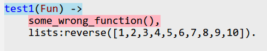

Меню:
Баннер для фонда поддержки ФП
Базовая поддержка Erlang в Emacs осуществляется пакетом erlang-mode, который поставляется вместе с дистрибутивом Erlang. Этот пакет реализует основные операции по работе с исходным кодом на Erlang — подсветку синтаксиса, расстановку отступов и т.п.
Кроме того, существуют и другие пакеты, обеспечивающие выполнение операций, не реализованных в erlang-mode — отладку, профилирование и т.д. Сюда относятся пакеты Distel1 и erlware-mode. В то время, как первый пакет является дополнением для erlang-mode, то второй, является прямой модификацией erlang-mode добавляющей дополнительные команды.
erlang-mode
erlang-mode входит в состав дистрибутива Erlang и поэтому доступен для работы сразу после
установки Erlang. Документация для данного пакета доступна либо с сайта Erlang, либо как
часть справочной документации Erlang, доступной с помощью команды erl -man erlang_mode.
Документация достаточно подробная и содержит описания всех основных команд.
Практически все команды реализуемые пакетом доступны для пользователя через меню Erlang, а
наиболее часто используемые могут быть выполнены используя сочетания клавиш, описанные ниже.
Установка и настройка пакета
Установка пакета очень проста — вам необходимо указать путь где находится erlang-mode
(обычно это подкаталог в дистрибутиве Erlang), и загрузить пакет erlang-start, например,
вот так:
(add-to-list 'load-path ".....") (require 'erlang-start) (add-to-list 'auto-mode-alist '("\\.erl?$" . erlang-mode)) (add-to-list 'auto-mode-alist '("\\.hrl?$" . erlang-mode)) (setq erlang-root-dir "/opt/local/lib/erlang") (add-to-list 'exec-path "/opt/local/lib/erlang/bin") (setq erlang-man-root-dir "/opt/local/lib/erlang/man")
в этом примере мы дополнительно устанавливаем список расширений, для которых erlang-mode
будет включаться автоматически. А также были изменены пути поиска исполняемых программ,
так что все утилиты Erlang будут запускаться безо всяких проблем. Две переменных —
erlang-root-dir и erlang-man-root-dir задают корневого каталога, содержащего дистрибутив
Erlang, а также каталога, содержащего документацию по Erlang.
Кроме того, пользователь может использовать erlang-mode-hook для установки различных
параметров, например, вот так:
(defun my-erlang-mode-hook () ;; when starting an Erlang shell in Emacs, default in the node name (setq inferior-erlang-machine-options '("-sname" "emacs")) ;; add Erlang functions to an imenu menu (imenu-add-to-menubar "imenu") ;; customize keys (local-set-key [return] 'newline-and-indent) ) ;; Some Erlang customizations (add-hook 'erlang-mode-hook 'my-erlang-mode-hook)
Данный код устанавливает опции с которыми будет запускаться процесс Erlang, а также изменяет привязки некоторых клавиш и добавляет список функций Erlang в меню, реализуемое пакетом Imenu.
Редактирование исходного кода
erlang-mode предоставляет пользователю набор команд для работы с кодом. Сюда можно отнести команды навигации по коду, его редактирования и правильно расстановки отступов.
Когда вы работаете с кодом функций, состоящих из нескольких отдельных выражений (clause),
то вы можете воспользоваться командой erlang-generate-new-clause (она привязана к C-c C-j)
для вставки нового выражения в текущей точке — эта команда берет название функции из
предыдущего выражения, и генерирует новое выражение, оставляя курсор в точке вставки
параметров функции. В том случае, если параметры нового выражения почти совпадают с
параметрами предыдущего, то вы можете воспользоваться командой erlang-clone-arguments (C-c
C-y) для копирования параметров из предыдущего выражения и вставки их в текущее выражение.
В зависимости от текущего контекста, клавиши ',', ';',
'<' и '>' могут вести себя по разному. Так, если вы находитесь
в конце выражения и нажимаете ;, то автоматически будет вставлен шаблон для нового
выражения, так как будто вы воспользовались командой erlang-generate-new-clause.
Аналогичным образом, ввод , в конце подвыражения, приведет к переходу на новую строку и
выставлению правильного отступа.
Для более удобного оформления кода Erlang пользователь может также воспользоваться
командой erlang-align-arrows (C-c C-a), которая выполняет выравнивание в выделенном
регионе текста стрелок (->) после выражений, что улучшает восприятие исходного кода за
счет явного выделения границ выражений.
Достаточно регулярно возникает необходимость в выделении текущего выражения или всей
функции. В этом случае пользователь может воспользоваться командами erlang-mark-clause
(M-h или C-c M-h) для выделения выражения, или erlang-mark-function (M-C-h) для выделения
функции целиком.
Для работы с комментариями определено несколько команд. Для конвертации выбранного
региона в комментарий, пользователь может воспользоваться командой comment-region (C-c
C-c), которая вставит по одному знаку комментария (%) в начало каждой строки региона. В
том случае, если вы хотите удалить комментарий с региона, то вы можете воспользоваться
командой erlang-uncomment-region (C-c C-u). Вы также можете воспользоваться командой
comment-dwim (M-;) для того, чтобы закомментировать выделенный регион, или вставить
однострочный комментарий в конце существующей строки.
Кроме того, erlang-mode реализует команду erlang-fill-paragraph (M-q) которая пытается
правильно отформатировать текущий параграф комментария, что также позволяет улучшить
читаемость исходного кода.
erlang-mode реализует набор команд предназначенных для правильной расстановки отступов в
исходном тексте. Нажав на клавишу TAB вы вызовите команду erlang-indent-command которая
сделает правильный отступ для текущей строки. А для выделенного региона вы можете
использовать стандартную команду indent-region (M-C-\). Существуют также отдельные
команды для расстановки отступов в текущем выражении —
erlang-indent-clause, функции —
erlang-indent-function (C-c C-q) и всем буфере —
erlang-indent-current-buffer.
Навигация по коду
В дополнение к стандартным командам перемещения по коду — следующая/предыдущая скобка, и
т.п., erlang-mode предоставляет набор дополнительных команд, которые позволяют выполнять
перемещение среди объектов Erlang — выражений и функций. Так, команды
erlang-beginning-of-function (C-a M-a) и erlang-end-of-function (C-a M-e) перемещают
курсор в начало и конец текущей функции Erlang2, а команды erlang-beginning-of-clause
(M-C-a) и erlang-end-of-clause (M-C-e) выполняют перемещение курсора в начало или конец
текущего выражения.
Аналогичным образом erlang-mode расширяет набор стандартных команд для работы с тегами.
Для использования этих команд вам необходимо создать файл TAGS, который может быть
сгенерирован либо с помощью утилиты etags из поставки Emacs, либо с помощью модуля tags
из поставки Erlang.
Используя имеющийся файл TAGS вы можете использовать стандартные команды работы с тегами
—
find-tag (M-.), tags-apropos, tags-search (C-x t s) и другие. erlang-mode добавляет
следующие команды —
erlang-find-tag, которая является аналогом find-tag, но позволяет
указывать модуль, в котором необходимо производить поиск (если тег задан в форме module:
или module:tag), erlang-find-next-tag (M-+), которая ищет следующий тег, и две команды
erlang-find-tag-other-frame (C-x 5 .) и erlang-find-tag-other-window (C-x 4 .), которые
открывают определение тега в новом фрейме или окне, соответственно.
Пользователь также может использовать команду erlang-complete-tag (M-TAB) для дополнения
имен известных функций, используя данные из файла TAGS.
Использование шаблонов кода
Для облегчения работы пользователя, erlang-mode имеет в своем составе набор шаблонов кода,
которые могут вставляться пользователем используя пункт Skeletons меню Erlang или
используя команду tempo-template-erlang-XXX, где XXX — название шаблона. Для вставки
шаблонов используется пакет tempo входящий в состав Emacs. В настоящее время пакет
предоставляет следующие классы шаблонов:
- заготовки для простых конструкций типа
if,case,receiveи т.д.; - заготовки для "стандартных" стилей оформления заголовков файлов — название модуля, автор модуля и т.д.;
- заготовки для различных стандартных серверов (behaviour в терминологии Erlang) —
gen_server,application,gen_fsmи т.д.
Компиляция и работа с erl
Пользователь может интерактивно выполнять команды Erlang используя процесс erl запущенный
в буфере Emacs (процесс запускается через comint, так что пользователь может использовать
стандартные возможности этого пакета, например перемещения по истории команд с помощью
клавиш M-p и M-n). Этот же процесс используется erlang-mode для выполнения компиляции
исходного кода.
Для запуска нового процесса erl пользователь может воспользоваться командой erlang-shell,
но он также может быть запущен неявно при выполнении команды компиляции или переключения в
буфер *erlang* с помощью команды erlang-shell-display (C-c C-z).
Компиляция и загрузка кода из текущего модуля осуществляется с помощью команды
erlang-compile (C-c C-k). В том случае если пользователь передаст этой команде префиксный
аргумент, то компиляция будет осуществлена с использованием отладочных опций debug_info и
export_all. Для просмотра результатов компиляции пользователь может воспользоваться
командой erlang-compile-display (C-c C-l). Для перемещения между найденными ошибками
используется команда erlang-next-error (C-x `). В том случае, если вы хотите заново
переместиться на первую найденную ошибку, то вам необходимо передать префиксный аргумент
этой команде, например, вот так —
C-u C-x `.
erlware-mode
erlware-mode является заменой erlang-mode, основанной на его коде, но добавляющей следующую функциональность:
- изменены шаблоны для вставки кода, теперь они содержат дополнительную информацию для
утилиты
edoc; - ведется работа над интеграцией поддержки для проектов Sinan и Faxien, позволяющей более простую инсталяцию и сопровождение пакетов для Erlang.
Пакет доступен для загрузки с сайта проекта, и его установка и настройка практически не отличается от установки и настройки erlang-mode.
Выполнение основных команд также не отличается от выполнения команд erlang-mode. Описания дополнительных команд будут добавляться по мере реализации новой функциональности.
distel
Пакет distel, доступный с http://code.google.com/p/distel/, является реализацией библиотекой на Emacs Lisp, которая позволяет использовать распределенный стиль программирования и взаимодействовать с кодом, написанным на Erlang. За счет наличия этой функциональности, этот пакет позволяет реализовать набор команд, отсутствующих в erlang-mode и позволяющих выполнять следующие задачи:
- поиск определений функций и доступ к актуальной документации;
- дополнение имен модулей и функций, основываясь на актуальной информации, полученной от среды выполнения Erlang;
- вычисление фрагментов кода;
- базовая поддержка рефакторинга исходного кода;
- отладка программ на Erlang;
- отображение информации о запущенных процессах Erlang и работа с ними;
- профилирование кода.
Краткий обзор возможностей пакета вы можете найти в статье на сайте Bill Clementson. Вместе с пакетом поставляется достаточно подробная документация, описывающая как общие концепции, лежащие в основе пакета, так и описывающая реализуемые функции.
Установка и настройка distel
Для установки пакета, вам необходимо скачать его с сайта проекта и распаковать в выбранное место. После этого, вы можете добавить следующий код в ваш файл инициализации:
(add-to-list 'load-path "~/emacs/distel/elisp") (require 'distel) (distel-setup)
который приведет к загрузке пакета и его базовой настройке. Дополнительно мы можем провести тонкую настройку пакета используя механизм хуков. Например, следующий код3 добавит новые привязки клавиш к режиму, используемому для интерактивной работы с Erlang, что сделает работу с кодом более удобной:
;; A number of the erlang-extended-mode key bindings are useful in the shell too (defconst distel-shell-keys '(("\C-\M-i" erl-complete) ("\M-?" erl-complete) ("\M-." erl-find-source-under-point) ("\M-," erl-find-source-unwind) ("\M-*" erl-find-source-unwind) ) "Additional keys to bind when in Erlang shell.") (add-hook 'erlang-shell-mode-hook (lambda () ;; add some Distel bindings to the Erlang shell (dolist (spec distel-shell-keys) (define-key erlang-shell-mode-map (car spec) (cadr spec)))))
Работа с исходным кодом
Пакет distel добавляет некоторое количество команд для работы с исходным кодом,
отсутствующих в erlang-mode. Однако стоит отметить, что некоторые из них требуют наличия
запущенной среды выполнения Erlang, и при первом запуске запросят у вас имя узла (node),
который будет использоваться для получения необходимой информации. Пользователь может
переключаться между узлами с помощью команды erl-choose-nodename (C-c C-d n). А проверить
доступность конкретного узла можно с помощью команды erl-ping (C-c C-d g), которая
запросит у вас имя узла, и в случае его доступности загрузит на него модули, необходимые
для реализации команд distel. Имя текущего узла всего отображается в строке статуса.
Кроме выполнения команд напрямую, пользователь может воспользоваться командами из подменю
Distel меню Erlang.
Distel реализует свой набор команд для дополнения имен модулей и функций. Для их
получения используется текущая информация из среды выполнения Erlang. Для использования
дополнения вы можете воспользоваться командой erl-complete (M-TAB и M-?). В том случае,
если набираемая часть имени соответствует нескольким именам, то будет показан буфер со
всеми возможными вариантами, в котором вы можете выбрать нужное вам.
Также, переопределяются и команды работы с тагами, но в отличии от erlang-mode вам нет
необходимости регулярно обновлять файл TAGS, поскольку distel позволяет найти определение
функции используя информацию от среды выполнения. Для перехода к определению нужной
функции вы можете использовать команду erl-find-source-under-point (M-.) — по умолчанию,
эта команда в качестве имени функции берет то имя, которое находится под курсором. Но вы
можете изменить это поведение, если передадите префиксный аргумент (C-u), или если
переменная distel-tags-compliant имеет не-nil значение — в этом случае, у вас запросят
имя функции, определение которой вы хотите найти. Чтобы вернуться назад, к точке вызова,
вы можете использовать команду erl-find-source-unwind (M-, или M-*).
Кроме того, в distel есть рудиментальные возможности по рефакторингу кода. С помощью
команды erl-refactor-subfunction (C-c C-d f) пользователь может выделить часть кода
(пользователю необходимо выделить нужный блок с помощью стандартных команд) функции в
отдельную функцию. При выполнении данной команды, у пользователя будет запрошено название
новой функции, будет определен список переменных, используемых в данной функции, и
выделенная часть кода будет заменена на вызов новой функции. Сама новая функция будет
помещена в буфер обмена, откуда она может быть вставлена с помощью команды yank (C-y).
Пример использования данной функции вы можете найти в документации distel.
Доступ к документации
Для более удобной работы с документацией, пакет distel использует внешние программы, написанные на Erlang, которые выполняют предварительную обработку документации, и затем используют полученные данные для ее отображения.
Для обработки документации в формате HTML, имеется модуль otp_doc, который выполняет
анализ файлов, и генерирует набор пар "сигнатура функции/ссылка на документацию".
С помощью команды erl-find-sig пользователь может получить список сигнатур функций,
соответствующих заданному выражению, а затем может воспользоваться командой erl-find-doc
для отображения документации (для этого необходимо наличие пакета w3m). В том случае если
имеется несколько функций, соответствующих запросу, то пользователь должен будет выбрать
нужную функцию из списка.
Пользователь может также получить краткую документацию по загруженным модулям. Для этого
используется дополнительный модуль fdoc, который также, как и otp_doc, проводит анализ
исходных текстов загруженных модулей и сохраняет собранные данные для последующего
использования. Получить описание модуля или функции из базы данных fdoc можно с помощью
команды erl-fdoc-describe (C-c C-d d). А с помощью команды erl-fdoc-apropos (C-c C-d a)
можно получить перечень функций, чьи названия или комментарий соответствуют заданному
регулярному выражению. В том случае, если одна из команд получает префиксный аргумент,
она вначале выполняет перестройку базы данных fdoc, и только затем выполняет требуемую
операцию.
Выполнение и профилирование кода
Distel расширяет набор команд erlang-mode предназначенных для выполнения кода Erlang. С
помощью команды erl-eval-expression (C-c C-d :) пользователь может ввести в мини-буфере
выражение на Erlang и получить результаты его вычисления. В том случае, если пользователь
выделил регион кода, то этот код будет предложен в качестве значения по умолчанию. Кроме
того, определены две команды, которые позволяют перегружать модули на выбранном узле. Это
команда erl-reload-module (C-c C-d L), которая заново загружает модуль с заданным именем,
и команда erl-reload-modules (C-c C-d r), которая заново загружает все обновленные
используемые модули.
Более мощные возможности по интерактивному выполнению кода Erlang реализованы в рамках так
называемых "интерактивных сессий" — аналоге буфера *scratch* в Emacs, которые позволяют
вводить и выполнять отдельные выражения Erlang не создавая выделенных файлов с исходным
кодом (пример работы вы можете увидеть на скриншоте ниже). Для начала работы в этом
режиме, необходимо выполнить команду erl-ie-show-session (C-c C-d e), которая либо создаст
новый, либо переключит в существующий буфер в котором пользователь может вводить команды.
По умолчанию, буфер имеет название *ie sessions имя_узла*. Внутри этого буфера,
пользователь может вводить выражения и определения функций. Для вычисления выражения,
которое находится перед курсором, используется команда erl-ie-eval-expression (C-j), а для
вычисления определения функции — команда erl-ie-eval-defun (C-M-x).
Также как и для документации, для профилирования используется существующий модуль Erlang
—
fprof. Для работы с ним distel предоставляет две команды. С помощью команды fpropf
(C-c C-d p) пользователь может ввести выражение Erlang и получить результаты выполнения
этого выражения в режиме профилирования. А с помощью команды fprof-analyse (C-c C-d P)
можно загрузить файл с уже имеющимися данными профилирования, и проводить их анализ в
удобной форме. После проведения анализа, пользователь получает доступ к буферу, в
котором перечислены все использованные в работе функции, и для каждой из них приводится
следующая информация: Calls — общее количество вызовов данной функции; ACC — сколько
времени (в миллисекундах) было затрачено на выполнение данной функции, включая вызов
других функций, вызванных из нее; Own — сколько времени выполнялась сама функция, без
учета других функций, вызванных из нее. Пример вывода результатов профайлинга вы можете
увидеть на рисунке ниже.
Работа с отладчиком
Для реализации возможности отладки приложений, distel использует те же модули, что и
отладчик, идущий в составе Erlang. Для того, чтобы воспользоваться отладкой, необходимо
скомпилировать модули с добавлением отладочной информации (необходимо явно указать ключ
+debug-info компилятору erlc или выполнить команду erlang-compile с префиксным
аргументом).
При работе отладчика создаются отдельные буфера для отображения списка отлаживаемых
(интерпретируемых) процессов (буфер Monitor) и отдельные буфера для каждого из
интерпретируемых модулей, которые выполняются в пошаговом режиме (буфер Attach).
Для того, чтобы получить возможность отладки текущего модуля, вам необходимо переключить
его в режим интерпретации, что выполняется с помощью команды edb-toggle-interpret (C-c C-d
i), после этого, вы можете расставлять в исходном тексте точки останова с помощью
edb-toggle-breakpoint (C-x SPC).
Сама отладка производится в буфере Attach, в который можно попасть через буфер Monitor.
Чтобы переключиться в буфер Monitor, вы можете воспользоваться командой edb-monitor (C-c
C-d m). В этом буфере отображается список отлаживаемых процессов и пользователю доступно
несколько команд: RET переключает в буфер Attach, соответствующий выбранному процессу; q
скрывает буфер монитора, а k удаляет буфер монитора, удаляет все точки останова и
отключается от модуля отладки на выбранном узле.
Буфер Attach позволяет выполнять пошаговое выполнение кода конкретного модуля. В нем
отображается исходный код модуля и метка, показывающая следующую выполняемую строку (в том
случае, если выполнение было остановлено на какой-то из точек останова). В этом буфере
пользователю доступны следующие команды:
| функция | клавиша | описание |
|---|---|---|
edb-attach-step |
SPC |
выполнить следующее выражение, с заходом в вызываемую функцию (если это вызов функции) |
edb-attach-next |
n |
выполнить следующее выражение, без захода в вызываемую функцию |
edb-attach-continue |
c |
продолжить выполнение до следующей точки останова |
edb-attach-up |
u |
показать предыдущий фрейм стека |
edb-attach-down |
d |
показать следующий фрейм стека |
edb-toggle-breakpoint |
b |
переключить точку останова на текущей строке |
edb-attach-help |
h |
показать справку по пользованию данным буфером |
q |
удалить буфер Attach без завершения отлаживаемого процесса |
Во время отладки пользователь может изменять исходный код модулей, поэтому расстановка
точек останова в исходном тексте, и в выполняемом процессе может отличаться. Для того,
чтобы их синхронизировать, distel имеет в своем составе команду edb-synch-breakpoints (C-c
C-d s), которую необходимо использовать после перекомпиляции и перезагрузки модуля. Кроме
того, для перезагрузки модулей рекомендуется использовать команду erl-reload-module, а не
загружать его вручную, поскольку эта команда позволяет сохранить все установленные точки
останова и флаги интерпретации модулей.
Еще одной возможностью distel полезной для отладки является то, что пакет может сохранить
текущее состояние отладчика, и затем восстановить его на выбранном узле, что крайне
полезно в тех случаях, когда вам необходимо перезапустить узел Erlang и продолжить отладку
с того места, где вы остановились. Для выполнения этой задачи, пакет определяет две
команды: edb-save-dbg-state (C-c C-d S) для сохранения состояния отладчика, и
edb-restore-dbg-state (C-c C-d R) для его восстановления.
Приложения для работы со средой выполнения Erlang
Кроме описанных выше приложений, в составе distel поставляется еще несколько утилит, которые могут быть полезными для разработчика, активно работающего с Erlang. Например, сюда можно отнести менеджер процессов выполняемых на узле Erlang, к которому сейчас подключен distel.
Менеджер процессов запускается командой erl-process-list (C-c C-d l) и создает буфер, в
который выводится различная информация о выполняемых процессах (пример показан на
скриншоте ниже). В данном буфере пользователь может выполнять различные команды, которые
позволяют получать более подробную информацию о процессе (RET или i), просматривать
содержимое очереди сообщений (m), выполнять трассировку процесса (b). Пользователь может
даже завершить процесс воспользовавшись командой k. Чтобы покинуть этот буфер необходимо
нажать q, а чтобы обновить информацию —
u.
Программирование с использованием distel
Distel позволяет писать на Emacs Lisp приложения в стиле Erlang, а также взаимодействовать с процессами, запущенными на узлах Erlang. Краткое введение в программирование с помощью distel вы можете найти в статье Distel: Distributed Emacs Lisp и/или статье в блоге Bill Clementson.
Настройка flymake для работы с Erlang
Пакет flymake, входящий в поставку Emacs, позволяет выполнять проверку корректности кода на лету. Erlang пока не входит в список языков, поддерживаемых "из коробки", но мы можем достаточно легко исправить это упущение4.
Если вы еще не использовали flymake, то во первых вам необходимо загрузить его с помощью следующей команды:
(require 'flymake)
Затем нам необходимо написать процедуру, которая будет правильно инициализировать flymake, так чтобы он мог работать с кодом на Erlang. Эта процедура будет захватывать код по мере набора и будет передавать его скрипту на Erlang, который и будет проверять код на наличие ошибок. Процедура выглядит следующим образом:
(defun flymake-erlang-init () (let* ((temp-file (flymake-init-create-temp-buffer-copy 'flymake-create-temp-inplace)) (local-file (file-relative-name temp-file (file-name-directory buffer-file-name)))) (list "~/emacs/bin/eflymake" (list local-file))))
Путь к скрипту указывается в теле процедуры, так что вам необходимо изменить путь в том случае, если он находится в другом месте. Сам скрипт достаточно прост — он получает имя файла и пытается выполнить компиляцию кода, возвращая список ошибок и предупреждений:
#!/usr/bin/env escript -export([main/1]). main([File_Name]) -> compile:file(File_Name, [warn_obsolete_guard, warn_unused_import, warn_shadow_vars, warn_export_vars, strong_validation, report]).
После написания процедуры и скрипта, нам необходимо указать flymake, что он должен
использовать указанную процедуру для проверки файлов с расширением .erl, что делается с
помощью следующего кода.
(add-to-list 'flymake-allowed-file-name-masks
'("\\.erl\\'" flymake-erlang-init))
На этом подготовительные действия заканчиваются и вы можете либо разрешить использовать flymake глобально, с помощью добавления хука открытия файла:
(add-hook 'find-file-hook 'flymake-find-file-hook)
либо явно включать режим flymake для нужных режимов, например, вот так:
(defun my-erlang-mode-hook () (flymake-mode 1)) (add-hook 'erlang-mode-hook 'my-erlang-mode-hook)
После этого, при открытии файла с расширением .erl режим flymake будет включаться
автоматически, и вы будете видеть результаты проверки по мере набора вашего кода. По
умолчанию, строки содержащие ошибки выделяются светло-розовым цветом, а строки, вызывающие
появление предупреждений — светло-голубым5. Пример вы можете увидеть на скриншоте:

В данном примере, функции some_wrong_function не существует, и поэтому Erlang не может ее
найти и рапортует об ошибке. А объявление функции подсвечено из-за того, что параметр Fun
не используется в теле функции, что приводит к получению предупреждения.
Пакет Wrangler
Пакет Wrangler реализует базовую функциональность по рефакторингу программ написанных на Erlang. Пакет доступен с сайта проекта, но работа пока находится в самом начале, и сами авторы не рекомендуют использовать его для серьезной работы. Документация на пакет может быть найдена тут.
ESense
Пакет ESense (ErlangSense) реализует для связки Emacs + Erlang нечто подобное функции Intellisense в Microsoft Visual Studio. Пакет реализует следующие возможности:
- дополнение имен модулей, функций, названий записей и полей в записях, а также имен макросов;
- переход к содержимому подключаемого (через
-include) заголовочного файла; - переход к определению функции в исходном коде;
- открытие документации на выбранную функцию или показ краткой подсказки в всплывающем окне.
Этот пакет может использоваться как дополнительный режим при редактировании исходного кода Erlang, а также при работе с кодом в буфере в котором выполняются команды Erlang.
Установка и настройка пакета
Скачать пакет ESense можно с сайта проекта. Для его работы требуется наличие модуля
разбора HTML из состава веб-сервера Yaws6. Скачанный пакет необходимо развернуть и с
помощью make скомпилировать код на Erlang, который будет использоваться для индексации
модулей.
После этого вам необходимо поместить файлы с расширением .el в то место, где их найдет
Emacs, и добавить следующий код в ваш файл инициализации:
(require 'esense-start) (setq esense-indexer-program "/path/to/esense.sh")
Вам необходимо изменить значение второй строки таким образом, чтобы она указывала на
расположение скрипта esense.sh, который используется для индексации кода. Прочие
настройки могут быть заданы используя группу настройки esense.
Перед первым запуском вам необходимо сгенерировать первоначальные индексы, которые будут
использоваться пакетом в процессе работы. Эта задача выполняется с помощью скрипта
esense.sh, в качестве параметра которому передается каталог с исходным кодом. (В первую
очередь рекомендуется построить индексы для исходных текстов Erlang, поскольку наличие
информации для некоторых модулей необходимо для работы пакета). Индексные файлы по
умолчанию сохраняются в каталоге ~/.esense.
После генерации индекса, вы можете или перезапустить Emacs, или выполнить команду
esense-initialize, которая обновит информацию о существующих индексных файлах. После
генерации индексов для исходных текстов, вы можете сгенерировать индексы для документации
в формате HTML, так что ссылки на нее смогут использоваться в процессе работы.
Работа с пакетом
По умолчанию, ESense использует клавишу F1 (команда esense-do-something-at-point) для
выполнения практически всех операций. В зависимости от положения курсора, пакет выполняет
одно из следующих действий:
- если курсор находится в конце символа, то пакет пытается дополнить имя символа (имя
модуля или функции из конкретного модуля). Если существует несколько вариантов
дополнения, то пакет отображает окно, в котором перечисляются все возможные варианты.
В этом окне пользователь может перемещаться с помощью клавиш курсора, и выбрать нужный
вариант с помощью клавиши
RETили сочетанияC-m; - если курсор находится на символе (функции, макросе или записи), то пакет показывает документацию для данного символа в всплывающем окне (tooltip);
- если курсор находится на списке параметров, то показывается документация на соответствующий параметр функции;
- если курсор находится на строке с директивой
-include, то будет показан соответствующий заголовочный файл.
Нажатие комбинации C-F1 приведет к вызову команды esense-go-to-documentation, что приведет
к переходу к месту определения символа, находящегося под курсором (вернуться назад можно с
помощью стандартной для etags комбинации M-*). А комбинация M-F1
(esense-go-to-function-documentation) запросит имя функции и выполнит переход к ее
определению.
Нажатие клавиш :, #, . и ? также приводят к выдаче списка возможных вариантов для функций
из модуля, имен записей, членов записей или макросов, соответственно.
1. На самом деле, этот пакет является реализацией Erlang-подобного стиля программирования для Emacs Lisp. erlang-extended-mode, реализуемый этим пакетом, построен на основе библиотеки, обеспечивающей взаимодействие с процессами Erlang.
2. Вы также можете задать числовой префикс для этих команд, что обеспечит пропуск соответствующего количества функций Erlang.
3. Этот код был опубликован в блоге Bill Clementson
4. Данный раздел основан на информации, полученной из блога Hypothetical Labs.
5. Вы можете сами указать нужные цвета, отредактировав параметры начертаний
<code>flymake-errline & flymake-warnline.
6. Вам может понадобиться добавить каталог где установлен Yaws в список каталогов, где
будет производиться поиск выполняемых модулей. Это может быть сделано путем помещения
команды code:add_path с нужным каталогом в файл инициализации ~/.erlang.
Last change: 09.03.2012 14:36
Copyright © 1997-2011Alex Ott · Design by Andreas Viklund ·